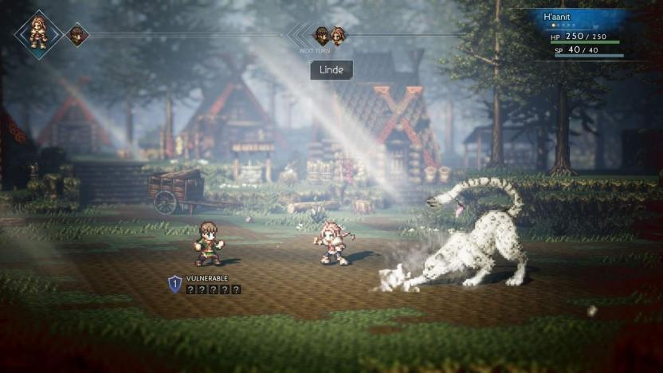

¿Te gustan los juegos de rol? ¿Te apasionan las historias emocionantes y los personajes carismáticos? ¿Te encanta la estética retro y las bandas sonoras épicas? Si tu respuesta es sí, entonces te encantará Octopath Traveler. Octopath Traveler es un juego de rol que combina lo mejor de los clásicos del género con una estética retro y una narrativa innovadora. En el juego puedes elegir entre ocho personajes diferentes, cada uno con su propia historia, habilidades y motivaciones. Puedes explorar el vasto y hermoso mundo de Orsterra, interactuar con sus habitantes, combatir contra enemigos variados y desafiantes, y tomar decisiones que afectan el desarrollo de la trama.
El juego destaca por su apartado gráfico, que mezcla sprites en 2D con escenarios en 3D, creando un efecto llamado HD-2D que le da un aspecto único y nostálgico. La banda sonora es otro de los puntos fuertes del juego, con melodías épicas y emotivas que acompañan cada momento. El sistema de combate es dinámico y estratégico, basado en el uso de puntos de impulso que nos permiten potenciar nuestras acciones o encadenar ataques. Además, el juego cuenta con un sistema de trabajos que nos permite personalizar a nuestros personajes y adaptarlos a nuestro estilo de juego. Recomiendo Octopath Traveler a todos los amantes del rol japonés, especialmente a los que disfrutaron de títulos como Final Fantasy o Chrono Trigger. Es una aventura larga y variada, con múltiples posibilidades y secretos por descubrir. Es un homenaje a los juegos de antaño, pero también una propuesta original y fresca que no dejará indiferente a nadie.
Algunos aspectos que podrían mejorar en el juego son: La conexión entre las historias de los personajes: A veces parece que cada uno va por su lado y no hay mucha interacción o coherencia entre ellos. La dificultad de algunos jefes: Algunos son demasiado fáciles y otros demasiado difíciles, lo que puede frustrar o aburrir al jugador. La repetición de algunas misiones secundarias: Algunas son muy similares entre sí y no aportan mucho a la trama o al desarrollo del personaje.